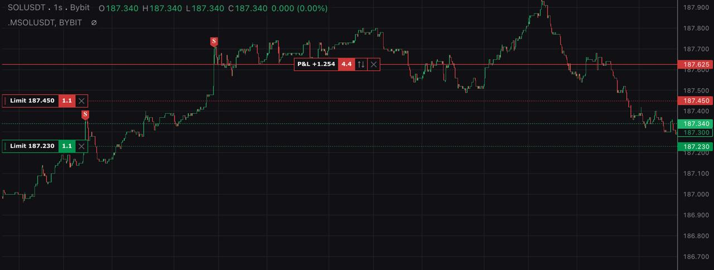

Market Maker
This tutorial shows how to do simple market making (backtests and live) on different exchanges using quantpylib's gateway connectors, data feeds and order management system.
The sample scripts are placed inside ./scripts folder in the quantpylib repo. This example works with exchanges implementing the quantpylib.gateway.master.Gateway endpoints, such as binance, hyperliquid and bybit.
Let us first consider the data and portfolio states required for a market-making operation. Typically, a market-maker needs to be able to track their portfolio states: order states (pending/open/cancelled/rejected), open positions, account equity/balance and so on.
Of course, tick data feeds are also required. This tick data feed includes but are not limited to orderbook ticks of the market we intend to quote, trade ticks of said market, as well as correlated assets - leader assets (AAPL,BTC) and so on.
In general, a market maker action triggers include but are not limited to internal clock cycles, trade arrival, orderbook delta updates pushed and a number of variable proprietary logic. We may choose to act on these data immediately upon arrival (a onTick behavior) or store it in some shared state that is later used to compute optimal market quotes. We will explore all of these options.
Live
We will start with the live version. Beginning with the necessary imports, and instantiation of necessary keys, and perhaps some settings. We are going to use exc=bybit here, but feel free to change it.
"""
Author: @hangukquant
About:
Template script showing how to quote markets using quantpylib's modules.
"""
import os
import asyncio
import logging
import numpy as np
from pprint import pprint
from decimal import Decimal
from dotenv import load_dotenv
load_dotenv()
import quantpylib.standards.markets as markets
from quantpylib.hft.oms import OMS
from quantpylib.hft.feed import Feed
from quantpylib.gateway.master import Gateway
from quantpylib.utilities.general import _time
from quantpylib.utilities.general import save_pickle, load_pickle
exc = 'bybit' #choose exchanges supported by quantpylib.gateway.master.Gateway
configs = {
"binance" : {
"quote_tickers":["CELOUSDT"],
"market":"BTCUSDT",
},
"hyperliquid" : {
"quote_tickers":["PENDLE"],
"market":"BTC",
},
"bybit" : {
"quote_tickers":["AERGOUSDT"],
"market":"BTCUSDT",
}
}
quote_tickers = configs[exc]["quote_tickers"]
config_keys = {
"binance" : {
"key":os.getenv('BIN_KEY'),
"secret":os.getenv('BIN_SECRET'),
},
"hyperliquid" : {
"key":os.getenv('HPL_KEY'),
"secret":os.getenv('HPL_SECRET'),
},
"bybit" : {
"key":os.getenv('BYBIT_KEY'),
"secret":os.getenv('BYBIT_SECRET'),
}
}
gateway = Gateway(config_keys=config_keys)
oms = OMS(gateway=gateway)
feed = Feed(gateway=gateway)
play = lambda : asyncio.sleep(100)
The gateway is the connector to the relevant exchanges - which is passed into the oms and feed objects. The oms handles order/position tracking, recovery, execution and auxiliary tasks. The feed does tick data subscription, storing, and retrieval - let us use BTC trade feeds and compute trade imbalance as our 'global shared data'. Say, you may want to skew individual quotes based on this. Or not. Demonstration is what it is.
order_value = 50 #order notional
market = configs[exc]["market"]
market_feed = None
market_imbalance = 0
async def market_trade_handler(msg):
global market_imbalance
#print(msg) #can use this msg directly (ts,price,sz,dir)
#or using the buffer `market_trades` quantpylib.hft.feed.Feed object
market_trades = feed.get_feed(market_feed) #quantpylib.hft.feed.Feed
market_imbalance = market_trades.get_imbalance(n=300) #global shared states
return
#subscribe to globally shared data, such as leader/majors ticks. kick off the quoter
async def main():
global market_feed
await gateway.init_clients()
await oms.init() #oms keeps track of pending/live orders, positions using sockets, reconnectivity and error correction
market_feed = await feed.add_trades_feed(
exc=exc,
ticker=market,
buffer=300,
handler=market_trade_handler
)
await asyncio.gather(*[make(ticker=ticker) for ticker in quote_tickers])
async def make(ticker):
#write market making logic
pass
if __name__ == "__main__":
asyncio.run(main())
main function, we intialize the gateway, oms - and subscribe to global feeds. This happens to be the BTC trades tick. We want to instruct the feed to store 300 of the most recent trades - and at the same time, we want to register a handler called market_trade_handler which is invoked on each trade arrival. We can use the market_feed id returned to retrieve the live buffer in feed.
This market_trade_handler is invoked with msg = (ts,price,sz,dir) - which we can use in the script. In our particular case, we are not interested in the instantaneous trade but in the recent arrivals of trades, say 300 = n <= buffer data points. This is a quantpylib.hft.trades.Trades object - we can retrieve the said data points using market_trades.get_buffer() or use the in-built methods to compute useful statistics such as get_imbalance - we use the default parameters for options such as the decay function here. Now, market_imbalance is a figure in [-1,1] that we can use anywhere in our script as a statistic of order flow imbalance of leading coins (should we wish).
We may even choose to trigger exchange actions (submission/cancellation of orders) inside this market_trade_handler. For our demonstration, however, we will take action on the orderbook ticks of the market we are quoting. Which means, we now have to implement the make function - typically, we are interested in the trade arrivals and orderbook ticks.
async def make(ticker):
async def printer(msg):
#this is called on trade tick
#print(ticker, '>', msg)
return
trade_feed = await feed.add_trades_feed(
exc=exc,
ticker=ticker,
buffer=100,
handler=printer
) #trade tick data
quoted_trades = feed.get_feed(trade_feed)
live_orders = oms.orders_peek(exc=exc) #quantpylib.standards.portfolio.Orders
async def l2_handler(lob):
#this is called on orderbook tick
#lob is a quantpylib.hft.lob.LOB object
return
l2_feed = await feed.add_l2_book_feed(
exc=exc,
ticker=ticker,
handler=l2_handler,
buffer=100
)
await play()
pprint(await oms.get_balance(exc=exc))
pprint(oms.orders_peek(exc=exc).as_list())
quoted_trades = feed.get_feed(trade_feed)
market_trades = feed.get_feed(market_feed)
quoted_book = feed.get_feed(l2_feed)
save_pickle('data.pickle',(quoted_trades,market_trades,quoted_book))
await oms.cleanup()
We use two separate handlers for the trade arrival (printer) and for the orderbook ticks (l2_handler). Again, like the market_trades, the moment we make this subscription, we can retrieve using the trade_feed the quoted_trades object which is a live buffer Trades object. On the other hand, the l2_handler receives a lob object which is a quantpylib.hft.lob.LOB object - similarly - we can obtain either the live buffer from this object or statistics such as mid, vamp indicators and vol. Once we are done, we will save these data buffers in the disk (so that we can use it for the backtest demonstration later).
The oms does order tracking and maintains live_orders which is a quantpylib.standards.portfolio.Orders object. This is achieved via the gateway's underlying socket connections and requests. Note that the oms itself is a separate functionality provided by quantpylib, and is able to do a variety of useful things - such as registering coroutine handlers for order updates, position fills and so on - see examples here.
In this section, we will not register any handlers, and just rely on the live updation of our orders which is intitated by default on oms.init(). Say, inside the l2_handler we would like to submit/cancel orders using the following logic:
1. Determine the price we want to quote, say the third from top of book. Fix order value at 50.0.
2. If there is no pending (submitted and unacknowledged) bid or ask, or existing orders that are tighter than price at step 1 - submit an order at determined price.
3. If there are acknowledged orders that are tighter than the determined levels, cancel them. If there are acknowledged orders that are further from top of book than the determined levels, let them sit in the order book to maintain price-time priority.
4. If there are more than 5 resting orders on each side, cancel excess orders starting from lowest price priority.
The above logic tries to pick up taker orders that slam a thin orderbook through multiple levels. Obviously, the feasibility of this depends on the market, our risk management, and whether a mean-reversionary effect exists upon said price impact, and this effect relative to costs/adverse fills. The logic tries to maintain time priority for duplicate levels. We make no comment or assertions on the viability of said 'rules'. The l2_handler is written as follows - note that there are many lines of unused excess code (e.g. "vamp":lob.get_vamp(notional=1000)) simply to demonstrate; the handler can be made more concise. For specifics on how to pass the parameters to oms methods, refer to documentation and examples. gateway documentation and examples should be helpful. Although not used, we have shown how to compute important and common variables in market making such as order flow imbalance, pressure and inventory.
async def l2_handler(lob):
#this is called on orderbook tick
#lob is a quantpylib.hft.lob.LOB object
mid = lob.get_mid()
inventory = float(oms.get_position(exc=exc,ticker=ticker)) * mid #notional position
quote_imbalance = quoted_trades.get_imbalance(n=50)
pprint({
"ticker":ticker,
"inventory":inventory,
"quote_imbalance":quote_imbalance,
"market_imbalance":market_imbalance,
"mid":lob.get_mid(),
"vamp":lob.get_vamp(notional=1000),
"vol":lob.get_vol()
})
#price match queue 3
bid_price = lob.bids[2,0]
ask_price = lob.asks[2,0]
#sorted by price priority (head is closest to top of book)
order_bids = live_orders.get_bid_orders(ticker=ticker)
order_asks = live_orders.get_ask_orders(ticker=ticker)
any_pending_bid = any(order.ord_status == markets.ORDER_STATUS_PENDING for order in order_bids)
any_pending_ask = any(order.ord_status == markets.ORDER_STATUS_PENDING for order in order_asks)
any_tight_bid = any(order.price is not None and order.price >= Decimal(str(bid_price)) for order in order_bids)
any_tight_ask = any(order.price is not None and order.price <= Decimal(str(ask_price)) for order in order_asks)
orders = []
if not any_tight_bid and not any_pending_bid:
orders.append({
"exc":exc,
"ticker":ticker,
"amount":order_value/lob.get_mid(),
"price":bid_price,
"round_to_specs":True,
})
if not any_tight_ask and not any_pending_ask:
orders.append({
"exc":exc,
"ticker":ticker,
"amount":order_value/lob.get_mid() * -1,
"price":ask_price,
"round_to_specs":True,
})
ack_bids = [order for order in order_bids if order.ord_status != markets.ORDER_STATUS_PENDING]
ack_asks = [order for order in order_asks if order.ord_status != markets.ORDER_STATUS_PENDING]
cancel_bids = [order for order in ack_bids if order.price > Decimal(str(bid_price))]
cancel_asks = [order for order in ack_asks if order.price < Decimal(str(ask_price))]
cancels = cancel_bids + cancel_asks
cancels += ack_bids[5 + len(cancel_bids):]
cancels += ack_asks[5 + len(cancel_asks):]
cancels = [{
"exc":order.exc,
"ticker":order.ticker,
"oid":order.oid
} for order in cancels]
if orders:
print('orders')
pprint(orders)
if cancels:
print('cancels')
pprint(cancels)
print('end-actions--')
if orders:
await asyncio.gather(*[
oms.limit_order(**order) for order in orders
])
if cancels:
await asyncio.gather(*[
oms.cancel_order(**cancel) for cancel in cancels
])
On the web-platform of selected exchange (bybit) we can see the quotes submitted: 
We see our tightest quotes are third from mid, with deeper levels sitting in the order book. A price jump from taker order 0.1088 to 0.1085 hit our bid.
Backtests
We would like to run backtests using the same code logic. This is incredibly simple - change these lines of code:
tosimulated = True
if simulated:
from quantpylib.hft.mocks import Replayer
quoted_trades,market_trades,quoted_book = load_pickle('data.pickle')
l2_data = {
exc:{configs[exc]['quote_tickers'][0]:quoted_book.buffer_as_list()}
}
trade_data = {
exc:{
configs[exc]['quote_tickers'][0]:quoted_trades.get_buffer(),
configs[exc]['market']:market_trades.get_buffer()
}
}
replayer = Replayer(
l2_data = l2_data,
trade_data = trade_data,
gateway= gateway
)
oms = replayer.get_oms()
feed = replayer.get_feed()
play = lambda : replayer.play()
else:
oms = OMS(gateway=gateway)
feed = Feed(gateway=gateway)
play = lambda : asyncio.sleep(100)
simulated = True/False flag.
...we will add more examples here configuring the Replayer class and its behaviour.
Happy making, makers.